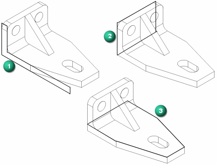
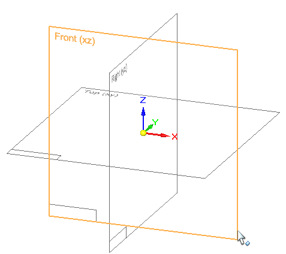
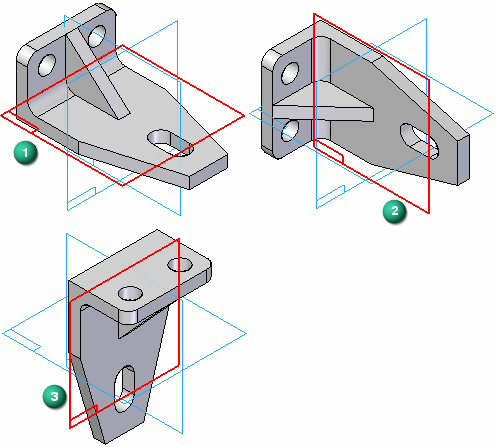
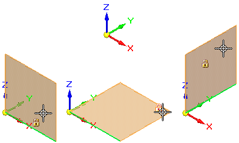
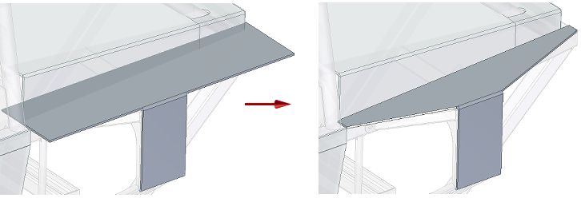
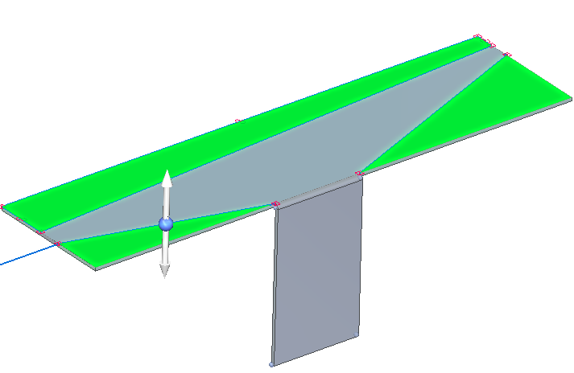

Sketching best practices
Sketches are the basis for your model designs. Here are some tips and tools to help you sketch in both ordered and synchronous modes.
-
Keep your base feature sketch simple. You can add and remove material to provide detail once the simplest base feature is complete.
-
Answer the question: What is the best sketch for the first feature?
Example:
-
The base reference planes are the three orthogonal reference planes at the origin of a new part or assembly document. They define the Top (xy), Right (yz), and Front (xz) principal planes.

Example:Which reference plane should the base feature be drawn on?

-
In the ordered environment, you must lock a sketch plane. You do this when you select a command to draw a line or circle, or when you select the Sketch command.


In the synchronous environment, you can begin drawing anywhere: in space, on other sketches, on existing model faces. However, it is better to lock a sketch plane to ensure the geometry falls on a specific plane or model face.
Example:In ordered and synchronous sketches, to ensure consistent part design and assembly construction, lock to and draw on a reference plane located on the base coordinate system at the center of the graphics window.

-
Use the Sketch View command (or press Ctrl+H) to draw flat to the locked sketch plane.
-
Use the zoom commands, which are located at the bottom of the Solid Edge window, to zoom in close enough to see the geometric relationship symbols on new 2D elements and on existing models. You can also use the keyboard commands in the help topic, Sketching shortcuts.
-
Use QuickPick
 to select accurately among different elements under the cursor.
to select accurately among different elements under the cursor. -
Before adding dimensions, draw the sketch geometry and add sufficient geometric relationships to keep lines horizontal and vertical, parallel, or equal.
-
Use existing model geometry (faces, edges, points) wherever possible to create and position a new sketch.
Example:Assume you want to remove material from this sheet metal part, so that it fits properly onto the chassis.

Consider using the following technique:
-
Use the Project to Sketch command to locate and include model edges, curves, and faces in the new sketch.
-
Use the Line command or other 2D drawing command to add the missing 2D elements.
-
Connect the included and drawn edges to create a closed sketch region using the Trim Corner command.
-
Select the resulting regions (green highlight) and use the handle to cut the unneeded portions away.
Example:
-
How do I
Try drawing this simple sketchDraw a synchronous sketch
Draw an ordered sketch of a part
Draw an assembly layout